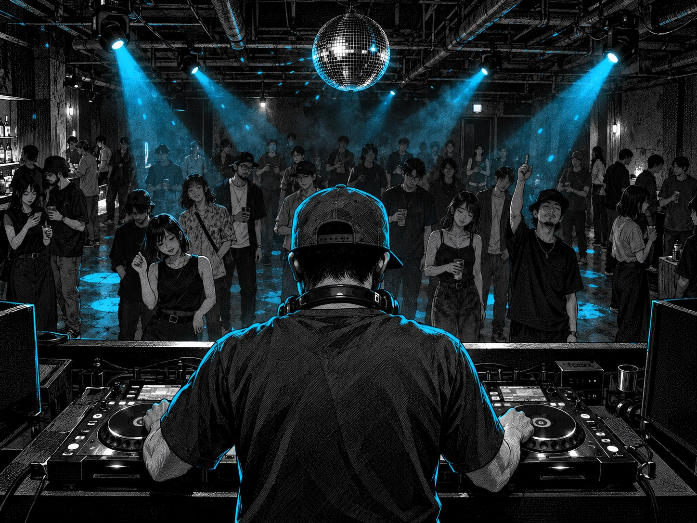
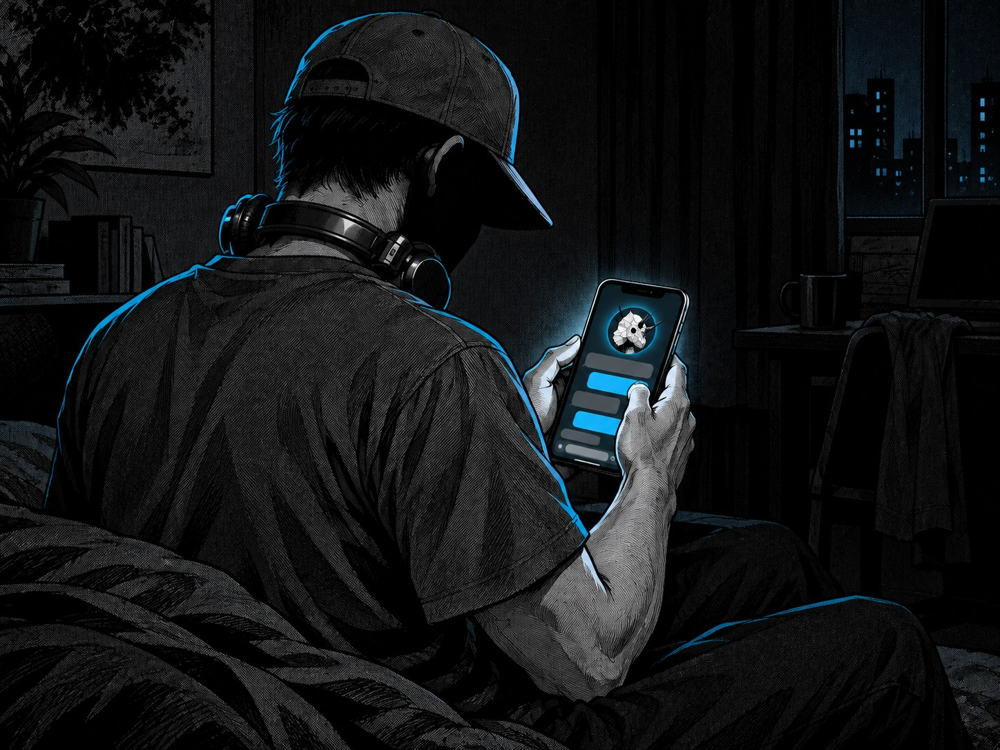
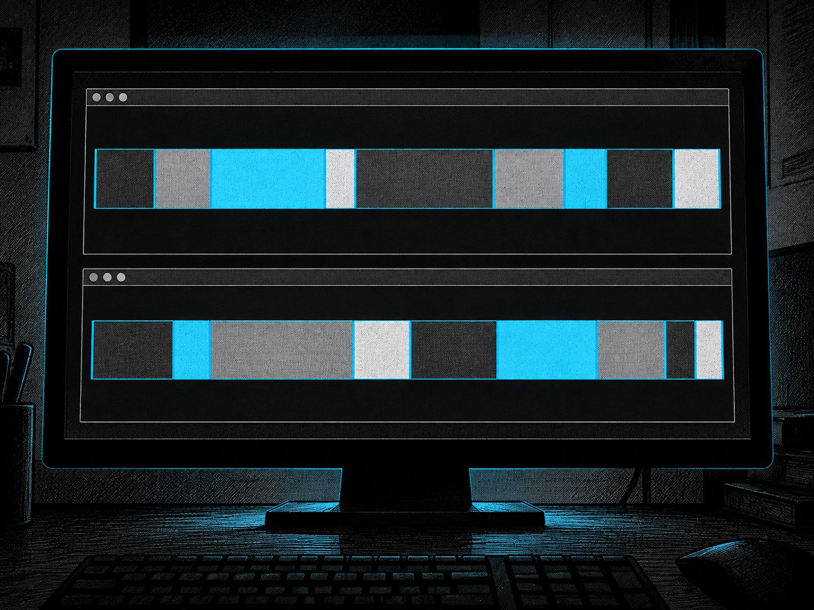
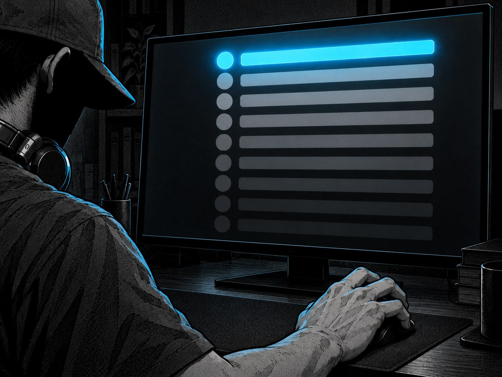
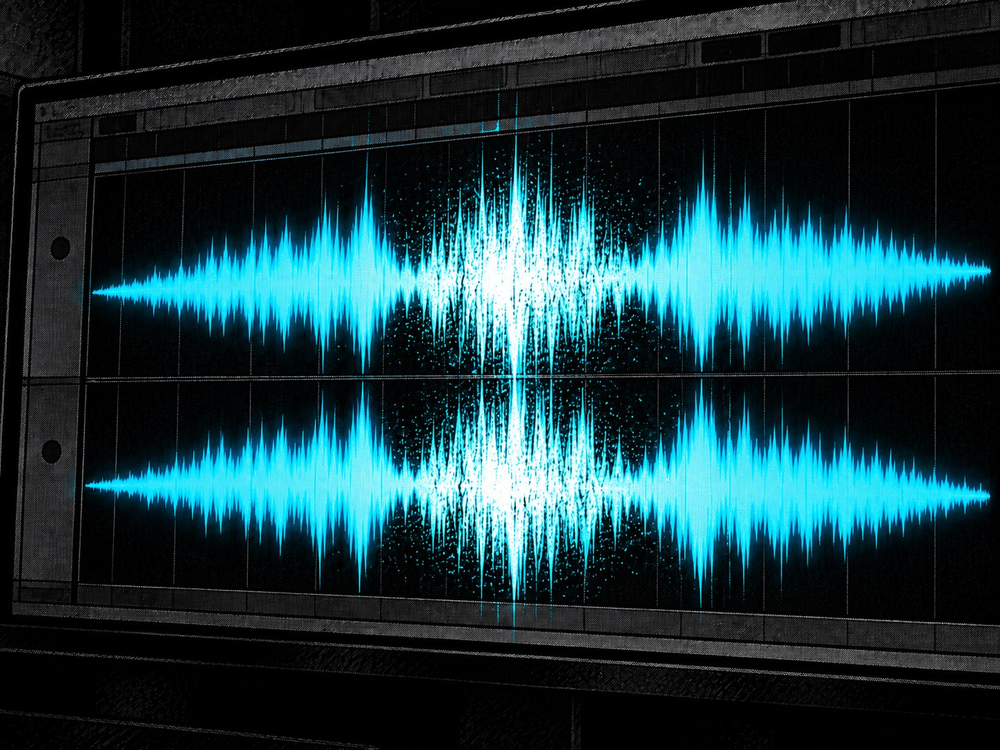
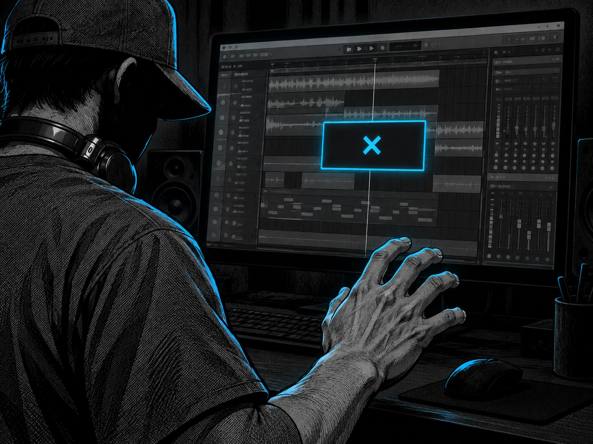
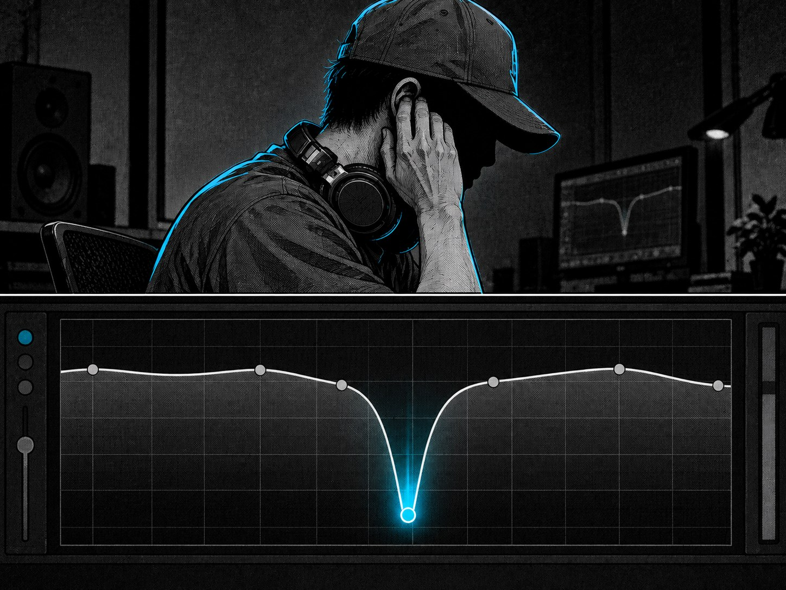

ACT 1 — かける側

それでも、何をかければ人が動くかは、もう分かる。
ACT 2 — 0曲

トップDJの1時間、15曲の内訳。
残りが、トレンド曲。——俺が出せるのは、0曲だった。
ACT 3 — 知識はあった
DAWはある。教材も買った。海外の講座も、韓国のスクールも。

開く記事ごとに、同じ場所が違う名前で呼ばれていた。
教材は足りていた。
足りなかったのは、どれを、どの順番でやるかだった。
ACT 4 — 順番

最初にやることは、曲を作ることですらなかった。
ACT 5 — 詰まりの連続

原因は逆で、二つの音が同じ場所で主役を張っていた。——下げたら、収まった。

検索して出てくるのは、非対応という一行だけ。
独学なら、たぶんここで終わっていた。

その「なぜか」に、数字がついた。——6000Hzを、2dB下げる。
ACT 6 — その日
まだ完成していない。
でも、次に何をやればいいかは、もう分かる。